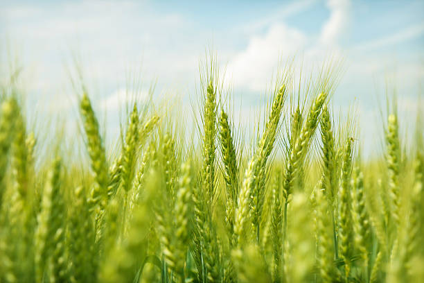
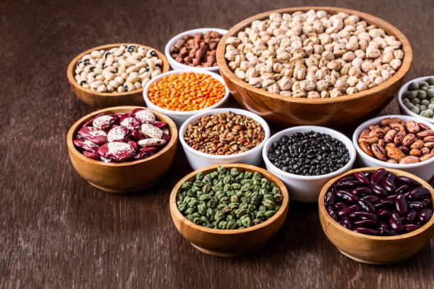
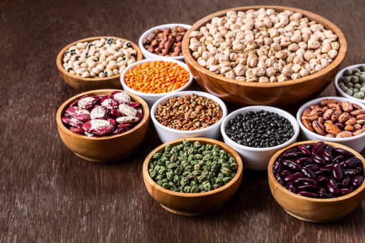

Wheat is primarily grown in two seasons.Rabi (Winter) Season: Sown from late October to December and harvested from March to May,Spring Wheat: Sown in spring (March-April) and harvested in late summer or early fall (August-September).
In India, major wheat-producing states with high market share include Uttar Pradesh, Punjab, Haryana, Madhya Pradesh, Rajasthan, and Bihar.
Wheat thrives in well-drained loamy or clay-loamy soils with a pH range of 6.0 to 7.5.The soil should be rich in organic matter and essential nutrients such as nitrogen, phosphorus, and potassium. Harvesting occurs after 120-150 days from sowing when the grain is mature, typically using combine harvesters.
गेहूं मुख्य रूप से दो मौसमों में उगाया जाता है। रबी (सर्दियों) का मौसम: अक्टूबर के अंत से दिसंबर तक बोया जाता है और मार्च से मई तक काटा जाता है, वसंत गेहूं: वसंत में बोया जाता है (मार्च-अप्रैल) और गर्मियों के अंत या शुरुआती शरद ऋतु (अगस्त-सितंबर) में काटा जाता है ).
भारत में, उच्च बाजार हिस्सेदारी वाले प्रमुख गेहूं उत्पादक राज्यों में उत्तर प्रदेश, पंजाब, हरियाणा, मध्य प्रदेश, राजस्थान और बिहार शामिल हैं।
गेहूं 6.0 से 7.5 पीएच रेंज वाली अच्छी जल निकासी वाली दोमट या चिकनी-दोमट मिट्टी में पनपता है। मिट्टी कार्बनिक पदार्थों और नाइट्रोजन, फास्फोरस और पोटेशियम जैसे आवश्यक पोषक तत्वों से समृद्ध होनी चाहिए। कटाई बुआई के 120-150 दिनों के बाद होती है जब अनाज परिपक्व हो जाता है, आमतौर पर कंबाइन हार्वेस्टर का उपयोग किया जाता है।
2. RICE / 2.चावल
Rice cultivation varies based on the type of rice and regional climate. However, there are generally three main seasons for rice cultivation,Kharif Season (Monsoon Season): Sown with the onset of monsoon rains (June-July) and harvested in autumn (September-October).Rabi Season: Sown after the monsoon season (October-November) and harvested in spring (March-April).Summer Season: Sown in early summer (April-May) and harvested in late summer (August-September).
major rice-producing states with high market share include West Bengal, Uttar Pradesh, Andhra Pradesh, Punjab, and Tamil Nadu.The soil should be well-drained and have a pH range of 5.5 to 7.0.Harvesting time varies based on the rice variety, with paddy being ready for harvest in about 3-6 months after sowing.
चावल की खेती चावल के प्रकार और क्षेत्रीय जलवायु के आधार पर भिन्न होती है। हालाँकि, चावल की खेती के लिए आम तौर पर तीन मुख्य मौसम होते हैं, ख़रीफ़ सीज़न (मानसून सीज़न): मानसून की बारिश (जून-जुलाई) की शुरुआत के साथ बोया जाता है और शरद ऋतु (सितंबर-अक्टूबर) में काटा जाता है। रबी सीज़न: मानसून सीज़न के बाद बोया जाता है ( अक्टूबर-नवंबर) और वसंत ऋतु (मार्च-अप्रैल) में काटा जाता है। ग्रीष्म ऋतु: गर्मियों की शुरुआत (अप्रैल-मई) में बोया जाता है और गर्मियों के अंत (अगस्त-सितंबर) में काटा जाता है।
उच्च बाजार हिस्सेदारी वाले प्रमुख चावल उत्पादक राज्यों में पश्चिम बंगाल, उत्तर प्रदेश, आंध्र प्रदेश, पंजाब और तमिलनाडु शामिल हैं। मिट्टी अच्छी तरह से जल निकासी वाली होनी चाहिए और पीएच रेंज 5.5 से 7.0 होनी चाहिए। कटाई का समय चावल की किस्म के आधार पर भिन्न होता है। , धान बुआई के लगभग 3-6 महीने में कटाई के लिए तैयार हो जाता है।
3. MAIZE / 3.मक्का
Maize is typically grown in warm climates and has a flexible growing season, but it's commonly planted in spring.Planting usually starts after the last frost date in spring and continues through early summer.The growing period for maize ranges from 60 to 100 days, depending on the variety and environmental conditions.
Maize has a significant market share globally due to its diverse uses in food, feed, ethanol production, and industrial applications.
The soil should be well-drained, with good fertility and a pH range of 5.8 to 7.0.Maize is typically harvested when the kernels reach physiological maturity and have a moisture content of around 20-25%.
मक्का आम तौर पर गर्म जलवायु में उगाया जाता है और इसका मौसम लचीला होता है, लेकिन इसे आमतौर पर वसंत ऋतु में लगाया जाता है। रोपण आमतौर पर वसंत में आखिरी ठंढ की तारीख के बाद शुरू होता है और गर्मियों की शुरुआत तक जारी रहता है। मक्का की बढ़ती अवधि 60 से 100 दिनों तक होती है, जो निर्भर करती है विविधता और पर्यावरणीय स्थितियों पर।
भोजन, चारा, इथेनॉल उत्पादन और औद्योगिक अनुप्रयोगों में इसके विविध उपयोगों के कारण विश्व स्तर पर मक्के की महत्वपूर्ण बाजार हिस्सेदारी है।
मिट्टी अच्छी जल निकासी वाली, अच्छी उर्वरता वाली और पीएच रेंज 5.8 से 7.0 होनी चाहिए। मक्के की कटाई आम तौर पर तब की जाती है जब दाने शारीरिक परिपक्वता तक पहुंच जाते हैं और उनमें नमी की मात्रा लगभग 20-25% होती है।
4. SOYABEAN / 4.सोया बीन
Soybeans are typically grown in warm climates and have a flexible growing season.Planting usually occurs in spring after the last frost date and continues through early summer.The growing period for soybeans ranges from 80 to 120 days, depending on the variety and environmental conditions.
Soybeans have a significant market share globally due to their versatile uses in food products, animal feed, biodiesel production, and industrial applications.Soybeans grow well in well-drained loamy soils with good fertility and a pH range of 6.0 to 7.0. Soybeans are typically harvested when the pods reach maturity and the beans inside are fully developed.
सोयाबीन आमतौर पर गर्म जलवायु में उगाया जाता है और इसका मौसम लचीला होता है। रोपण आम तौर पर आखिरी ठंढ की तारीख के बाद वसंत ऋतु में होता है और गर्मियों की शुरुआत तक जारी रहता है। सोयाबीन की बढ़ती अवधि विविधता और पर्यावरणीय परिस्थितियों के आधार पर 80 से 120 दिनों तक होती है।
खाद्य उत्पादों, पशु चारा, बायोडीजल उत्पादन और औद्योगिक अनुप्रयोगों में इसके बहुमुखी उपयोग के कारण सोयाबीन की विश्व स्तर पर एक महत्वपूर्ण बाजार हिस्सेदारी है। सोयाबीन अच्छी उर्वरता और 6.0 से 7.0 की पीएच सीमा के साथ अच्छी तरह से सूखा दोमट मिट्टी में अच्छी तरह से बढ़ता है। सोयाबीन की कटाई आमतौर पर तब की जाती है जब फलियाँ परिपक्व हो जाती हैं और अंदर की फलियाँ पूरी तरह से विकसित हो जाती हैं।
5. SUGARCANE / 5.गन्ना

Sugarcane is typically grown in tropical and subtropical regions with warm temperatures and adequate rainfall.Planting usually occurs during the spring or early summer months.The growing period for sugarcane is long, typically lasting 12 to 18 months before harvest.
In India, states like Uttar Pradesh, Maharashtra, Karnataka, Tamil Nadu, and Gujarat are top sugarcane-producing states.The soil should be rich in organic matter and have a pH range of 6.0 to 7.5.
Sugarcane is harvested when mature, typically after 12 to 18 months, using mechanical harvesters or manual methods.
गन्ना आम तौर पर गर्म तापमान और पर्याप्त वर्षा वाले उष्णकटिबंधीय और उपोष्णकटिबंधीय क्षेत्रों में उगाया जाता है। रोपण आमतौर पर वसंत या शुरुआती गर्मियों के महीनों के दौरान होता है। गन्ने की बढ़ती अवधि लंबी होती है, आमतौर पर फसल से पहले 12 से 18 महीने तक चलती है।
भारत में, उत्तर प्रदेश, महाराष्ट्र, कर्नाटक, तमिलनाडु और गुजरात जैसे राज्य शीर्ष गन्ना उत्पादक राज्य हैं। मिट्टी कार्बनिक पदार्थों से समृद्ध होनी चाहिए और पीएच रेंज 6.0 से 7.5 होनी चाहिए।
गन्ने की कटाई परिपक्व होने पर की जाती है, आमतौर पर 12 से 18 महीने के बाद, यांत्रिक हार्वेस्टर या मैन्युअल तरीकों का उपयोग करके।
6. COTTON / 6.कपास

Cotton is typically planted in the Kharif season, which begins with the onset of the monsoon (June-July) and harvested in the autumn (October-January).
Major cotton-producing states include Gujarat, Maharashtra, Telangana, Andhra Pradesh, and Madhya Pradesh.Optimal pH range is 6.0 to 7.5. Cotton is harvested when the bolls burst open. Harvesting can be done manually or using mechanical harvesters.
कपास आमतौर पर ख़रीफ़ सीज़न में लगाया जाता है, जो मानसून की शुरुआत (जून-जुलाई) के साथ शुरू होता है और शरद ऋतु (अक्टूबर-जनवरी) में काटा जाता है।
प्रमुख कपास उत्पादक राज्यों में गुजरात, महाराष्ट्र, तेलंगाना, आंध्र प्रदेश और मध्य प्रदेश शामिल हैं। इष्टतम पीएच रेंज 6.0 से 7.5 है। कपास की कटाई तब की जाती है जब बीजकोष फूटकर खुल जाते हैं। कटाई मैन्युअल रूप से या यांत्रिक हार्वेस्टर का उपयोग करके की जा सकती है।
7. PULSES / 7.दालें
 

Sowing in June-July, harvesting in September-October. India is the largest producer and consumer of pulses.majorly in Madhya Pradesh (largest producer)Uttar Pradesh,Maharashtra,Rajasthan,Karnataka,Andhra Pradesh.
Well-drained loamy to sandy loam soils with good organic matter.ph range of 6.0-7.5.90-120 days depending on the type of pulse.Requires less water, but critical stages like flowering and pod development need adequate moisture.
۔जून-जुलाई में बुआई, सितम्बर-अक्टूबर में कटाई। भारत दालों का सबसे बड़ा उत्पादक और उपभोक्ता है। मुख्य रूप से मध्य प्रदेश (सबसे बड़ा उत्पादक) उत्तर प्रदेश, महाराष्ट्र, राजस्थान, कर्नाटक, आंध्र प्रदेश में।
अच्छे कार्बनिक पदार्थ के साथ अच्छी तरह से सूखा दोमट से रेतीले दोमट मिट्टी। दाल के प्रकार के आधार पर 6.0-7.5.90-120 दिनों की पीएच सीमा। कम पानी की आवश्यकता होती है, लेकिन फूल और फली के विकास जैसे महत्वपूर्ण चरणों में पर्याप्त नमी की आवश्यकता होती है।
8. GROUNDNUT / 8.मूंगफली


Groundnuts are typically planted in the Kharif season (June-July) with the onset of monsoon and harvested in September-October. Major groundnut-producing states include Gujarat, Andhra Pradesh, Tamil Nadu, Karnataka, and Maharashtra. Optimal pH range is 6.0 to 6.5.The soil should be rich in calcium and other essential nutrients. Groundnuts also benefit from soils with good organic matter content.
Groundnuts are harvested when leaves begin to yellow and pods are fully developed, typically 90-120 days after planting. Harvesting is done by uprooting the plants and allowing them to dry.
मूंगफली आमतौर पर मानसून की शुरुआत के साथ खरीफ सीजन (जून-जुलाई) में बोई जाती है और सितंबर-अक्टूबर में काटी जाती है। प्रमुख मूंगफली उत्पादक राज्यों में गुजरात, आंध्र प्रदेश, तमिलनाडु, कर्नाटक और महाराष्ट्र शामिल हैं। इष्टतम पीएच रेंज 6.0 से 6.5 है। मिट्टी कैल्शियम और अन्य आवश्यक पोषक तत्वों से समृद्ध होनी चाहिए। अच्छी कार्बनिक पदार्थ वाली मिट्टी से भी मूंगफली को फायदा होता है।
मूंगफली की कटाई तब की जाती है जब पत्तियाँ पीली पड़ने लगती हैं और फलियाँ पूरी तरह से विकसित हो जाती हैं, आमतौर पर रोपण के 90-120 दिन बाद। कटाई पौधों को उखाड़कर और उन्हें सूखने देकर की जाती है।
9. ONION / 9.प्याज


Onions are planted during June-July and harvested in October-November.Major onion-producing states include Maharashtra, Karnataka, Madhya Pradesh, Gujarat, and Bihar.Onions grow best in well-drained sandy loam to clay loam soils.
Optimal pH range is 6.0 to 7.5.The soil should be rich in organic matter and nutrients, especially nitrogen, phosphorus, and potassium.Onions are harvested when the tops begin to fall over and the bulbs reach the desired size. Harvesting is usually done 100-120 days after planting.
प्याज जून-जुलाई के दौरान लगाया जाता है और अक्टूबर-नवंबर में काटा जाता है। प्रमुख प्याज उत्पादक राज्यों में महाराष्ट्र, कर्नाटक, मध्य प्रदेश, गुजरात और बिहार शामिल हैं। प्याज अच्छी तरह से सूखा रेतीले दोमट से लेकर चिकनी दोमट मिट्टी में सबसे अच्छा बढ़ता है।
इष्टतम पीएच रेंज 6.0 से 7.5 है। मिट्टी कार्बनिक पदार्थों और पोषक तत्वों, विशेष रूप से नाइट्रोजन, फास्फोरस और पोटेशियम से समृद्ध होनी चाहिए। प्याज की कटाई तब की जाती है जब शीर्ष गिरने लगते हैं और बल्ब वांछित आकार तक पहुंच जाते हैं। कटाई आमतौर पर रोपण के 100-120 दिन बाद की जाती है।
10. BANANA / 10.केला

Bananas require a warm, humid climate and can be grown year-round in tropical and subtropical regions.Ideal temperature range is 26-30°C (78-86°F).Major banana-producing states include Tamil Nadu, Maharashtra, Gujarat, Andhra Pradesh, and Karnataka. Bananas thrive in well-drained, fertile loamy soils.
Optimal pH range is 6.0 to 7.5. Soil should be rich in organic matter with adequate nitrogen, phosphorus, and potassium levels.Bananas are usually ready for harvest 12-15 months after planting. Harvesting is done when the fruit reaches full size but is still green.
केले को गर्म, आर्द्र जलवायु की आवश्यकता होती है और इसे उष्णकटिबंधीय और उपोष्णकटिबंधीय क्षेत्रों में साल भर उगाया जा सकता है। आदर्श तापमान सीमा 26-30°C (78-86°F) है। प्रमुख केला उत्पादक राज्यों में तमिलनाडु, महाराष्ट्र, गुजरात शामिल हैं। आंध्र प्रदेश, और कर्नाटक। केले अच्छी जल निकासी वाली, उपजाऊ दोमट मिट्टी में पनपते हैं।
इष्टतम पीएच रेंज 6.0 से 7.5 है। मिट्टी पर्याप्त नाइट्रोजन, फास्फोरस और पोटेशियम के स्तर के साथ कार्बनिक पदार्थों से समृद्ध होनी चाहिए। केले आमतौर पर रोपण के 12-15 महीने बाद कटाई के लिए तैयार होते हैं। फल की कटाई तब की जाती है जब फल पूर्ण आकार का हो जाता है लेकिन फिर भी हरा रहता है।